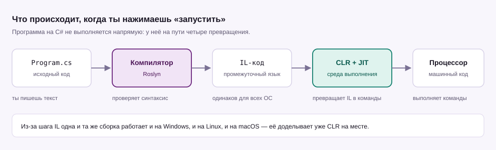

Урок 01 · 15 минут · консоль
C# и .NET: первая программа
C# — это язык, на котором ты пишешь. .NET — платформа, которая твой текст исполняет. Разберёмся, кто из них кто, и запустим первую строку кода.
Что такое C#
C# (произносится «си шарп») придумал Андерс Хейлсберг в Microsoft, первый релиз вышел в 2002 году. С тех пор язык сильно вырос, но идея осталась простой: строгий, предсказуемый и удобный язык для почти любых задач — от консольных утилит до игр на Unity, сайтов на ASP.NET и мобильных приложений.
- Строгая типизация. У каждой переменной есть тип, и компилятор проверяет его до запуска. Большая часть глупых ошибок отлавливается ещё до того, как программа что-то сделает.
- Объектно-ориентированный. Почти всё в C# — это класс и его объекты. Подробно будет в шестом уроке.
- Компилируемый. Код сначала собирается в отдельный файл, а не выполняется построчно, как в Python.
- Кроссплатформенный. Один и тот же код работает на Windows, Linux и macOS.
Как код превращается в программу
Ты пишешь текст в файле .cs. Дальше в дело вступают две программы: компилятор и среда выполнения. Программа на C# никогда не исполняется напрямую — это важно понять сразу.

Сначала компилятор Roslyn проверяет синтаксис и превращает код в IL — промежуточный язык, одинаковый для всех операционных систем. Потом среда CLR со встроенным JIT-компилятором на ходу переводит IL в машинные команды конкретного процессора. Поэтому один и тот же файл запускается и на Windows, и на Linux.
Установка
Нужен .NET SDK — он включает и компилятор, и среду выполнения, и команду dotnet. На Windows проще всего через winget:
winget install Microsoft.DotNet.SDK.10Если у тебя уже стоит .NET 8 — тоже подойдёт, весь курс работает и на нём. Проверка после установки (в новом окне терминала):
dotnet --versionЕсли в ответ появилось что-то вроде 10.0.100 — всё готово.
Создаём проект
Проект на C# — это папка с файлом .csproj (настройки) и файлами кода. Создать консольный проект и сразу запустить:
dotnet new console -o Hello
cd Hello
dotnet runКоманда dotnet new console создаёт папку Hello с готовым файлом Program.cs. Внутри уже лежит код, который печатает «Hello, World!». dotnet run собирает проект и запускает его.
Разбираем первую программу
Заменим содержимое Program.cs на своё:
// Первая программа: вывод в консоль
Console.WriteLine("Привет, мир!");
Console.WriteLine(2 + 2);Запускаем снова dotnet run — в консоли появляются две строки. Разберём по частям одну команду:
Console— класс, который представляет терминал. С большой буквы, потому что имена классов в C# пишут с заглавной..— обращение внутрь класса: «возьми у Console вот этот метод».WriteLine— метод, который печатает строку и переводит курсор на новую строку.("Привет, мир!")— аргумент: то, что метод должен напечатать.;— конец оператора. В C# почти каждая инструкция заканчивается точкой с запятой.
Современный C# разрешает писать код без класса и метода Main — это называется top-level statements. Такой файл и есть вся программа. Полная, «классическая» запись того же самого выглядит так:
class Program
{
static void Main()
{
Console.WriteLine("Привет, мир!");
}
}Класс Program — контейнер. Точка входа программы — метод Main: C# ищет именно его и начинает выполнение оттуда. Дальше в курсе мы будем пользоваться короткой записью, чтобы не тратить место на обёртку.
Что ещё умеет Console
| Команда | Что делает |
|---|---|
Console.WriteLine("текст") | печатает строку и переводит курсор на новую |
Console.Write("текст") | печатает строку без перевода строки |
Console.ReadLine() | читает то, что ввёл пользователь, и возвращает строку |
Console.ReadKey() | ждёт нажатия клавиши, не показывая её на экране |
Ошибки, на которых спотыкаются все
console вместо Console — C# различает регистр букв. Кавычки-ёлочки «вот такие» вместо обычных "вот таких" — компилятор их не понимает. И запуск dotnet run не из папки проекта.
Компилятор не просто ругается: он показывает номер строки и столбца. Читай сообщение с конца — там обычно написано, чего именно он ждал.
Console.WriteLine("Привет") забыли точку с запятой. Что произойдёт?Выведи в консоль две строки: своё имя и свой возраст (числом, без кавычек).
Усложнённый вариант: спроси имя у пользователя через Console.ReadLine() и поздоровайся.
Показать решение
// простое задание
Console.WriteLine("sneg");
Console.WriteLine(17);
// усложнённое: имя вводит пользователь
Console.Write("Как тебя зовут? ");
string name = Console.ReadLine();
Console.WriteLine($"Привет, {name}!");Символ $ перед строкой включает подстановку значений в фигурных скобках — подробно разберём в следующем уроке.